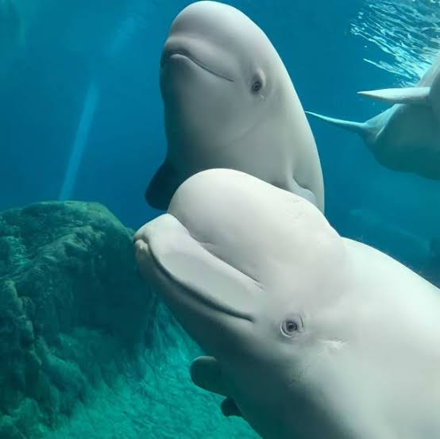
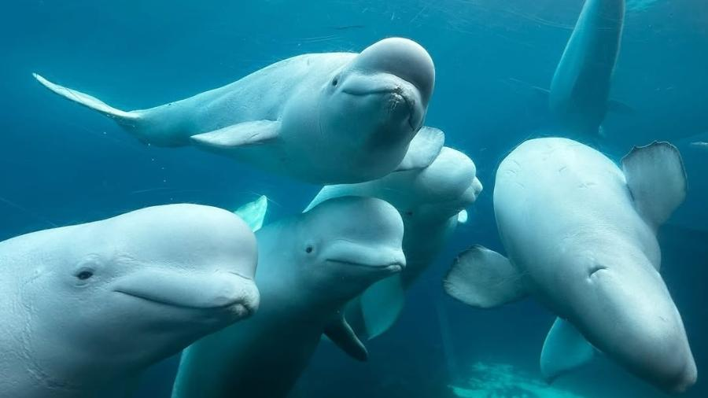
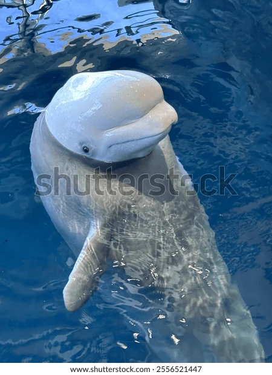
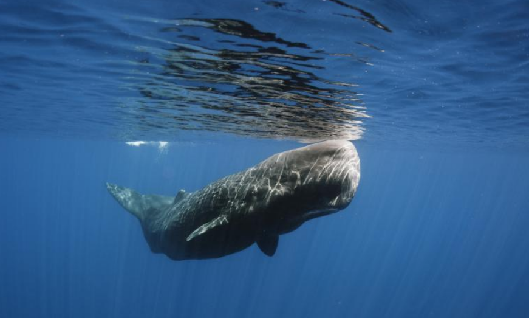
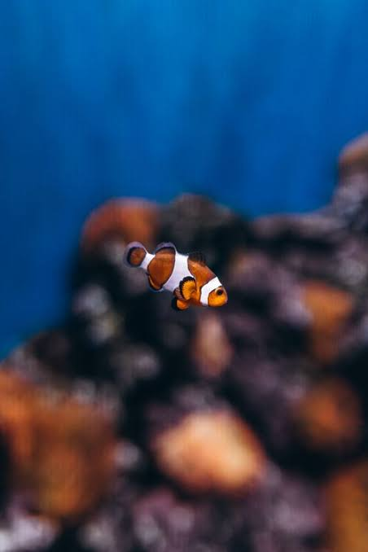

Por que as belugas são chamadas de "canários do mar"?

Porque os sons que elas fazem debaixo d'água lembram muito o canto de passarinhos.

Por que as belugas são chamadas de "canários do mar"?

Porque os sons que elas fazem debaixo d'água lembram muito o canto de passarinhos.

As belugas mudam de cor ao longo da vida?

Sim! Elas nascem cinzas ou castanhas e vão ficando completamente brancas conforme envelhecem.

O que a cachalote mais gosta de caçar e comer no fundo do mar?

Lulas-gigantes! Elas travam batalhas no escuro das profundezas do oceano com lulas gigantescas.

Todos os peixes-palhaço nascem como machos?.

Sim! Todos nascem machos e o maior e mais dominante do grupo pode se transformar em fêmea.